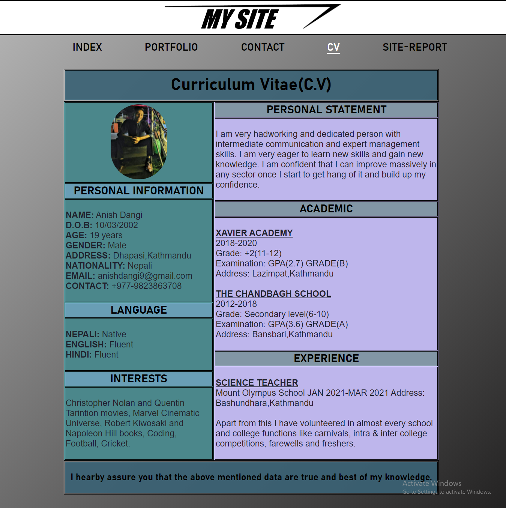

Greetings everyone!
As of you are on this page now, I assume that you have visited all the other pages. Talking about the module, so far I have learned about the basics of developing a web site by using html and css which includes different types of layout properties, creating forms, creating tables, making a web page responsive, designing a web site using the basics of css and many more. Through all this I would like to give credit to our module teacher, Mr.Ankit Thapa for teaching us in a way which was very easy to understand. And now, about the experience of developing the site, a detailed information is mentioned below with screenshots of each page of how it looked at the starting phases which is located on the left hand side vs how it looked finally which is located on the right hand side.
| Overall layout and design: |
|
Date: 12th May
After receiving the assignment on 11th may, I planned a basic layout and design for my site and started working from 12th may. I decided to name the site as “MY SITE” and for the logo I took inspiration from the logo of Stark Industries which is a fictional industry in a movie named “Ironman”. I downloaded the logo of Stark Industries (Anon., 2013) and edited it in MS Word. I added animation on the logo to make it look more attractive. Then I set my background color of each page to yellow just as a filler which I later replaced with white-grey gradient rotated at an angle of 135 degree. This background was selected as I wanted the background to be neither too light nor too dark so that the visitor can view the content present in the page easily and also it gives an attractive look to the website which is eye-catching. Only two font-family have been used in the development of this site which are Arial and Bahnschrift which I believe, gives a soothing experience to the visitor while reading and is easy to understand. The font size and color are selected accordingly so that the visitor can read the written content easily. Display: grid property is used for the overall layout of the site for desktop view which helps to manage content in an easier way when used appropriately. The navigation bar is placed just below the logo in all the pages. A list of pages are created using list property. All the pages are linked with one another using anchor tag in such a way that every page is accessible from the active page. A border is included in the bottom of the active page so that the visitor can easily know on which page they are currently at.
|
| Index page: |
|
Date: 13th May
After completion of logo and navigation bar, I started working on my index page from 13th May. In this page I decided to include my name and a brief introduction of myself. For this, I divided the page to nearly half so that on one side there would be my name and a brief info on the other. After writing my name on one side and my info on the other, the page looked unbalanced as there was a huge vacant space between my name and the info section. So, to make the page look more balanced I increased the font size of my name and positioned it in the center of the left division. Now, to make the page look more attractive, I changed the color of my name from black to gradient rotated at an angle of 135 degree but as this is something new I took a little help from the YouTube (Anytime Web-design, 2017). Then I changed the background of info section to gradient rotated at an angle of 135 degree and gave a shadow to the info section and a border using box-shadow and border property. I also added my photograph in the info section so that the info would look more professional and gave it a border using border property which acted like a frame to the photograph.


|
| Portfolio page: |
|
Date: 18th May
After completion of index page, I started working on my portfolio page from 18th May. In this page, I included photographs of some of the small demo projects I have worked on my own just for knowledge purpose and as mentioned, some place holder images which will be later replaced by new projects. Proper headings were given to both of them so that the visitors can easily distinguish between them. Screenshot of four of my demo projects were taken and placed in the page aligned horizontally to each other. The size of those screenshots were reduced compared to the original screenshot to make them perfectly fit in the given area. The screenshots were linked using anchor tag in such a way that when clicked, the original screenshot were to open in the site. Target:”_blank” property was used so that the clicked screenshot would open in new page rather than the active page so that the visitor won’t have to go back and forth after viewing each screenshot. For design, a thin border covering the outer surface of the area is included. Below that a placeholder heading is placed. Four placeholder images (Hughes,n.d.) were downloaded and placed below the placeholder title, 2 at each side aligned vertically. (Note: Only one image is downloaded and is repeated four times). Just like above, a thin border covering the outer surface of the area is included. Below the placeholder images, a note is written and is animated such that the note enters the screen from left side and leaves the screen from right side. This animation is just like marquee. Marquee property was used for this note at first but later it was changed to animation as marquee is outdated and animation is preferred over marquee. An animation was also added for the demo projects in which the screenshot of the projects entered the screen from left side and came to rest at a certain position but since 3 different animations in the page were of same kind and also a frame drop was seen in the project’s animation it was later changed by using opacity property in which the screenshot of the projects becomes slowly visible in the page. By changing this animation the frame drop issue of the page was solved.
|
| Contact page: |
|
Date: 27th May
After completion of portfolio page, I started working on my contact page from 27th May. I was instructed to make a form which can be filled by the visitor. So, for that I decided to divide my page in 2 sector in around 60:40 ratio. On the left side I made a form and on the right side I included my contact information. Proper headings were given to both of them. The form is divided in two parts which are separated with the help of field set. The upper part is for the personal information for the visitor and the lower part is for other information. Proper legend is given to each field set which helps to differentiate them easily. Input type=”text” is used for first name, last name and email, type=”radio” is used for gender selection, type=”checkbox” is used for visit purpose, type=”date” is used for D.O.B in which the maximum date is set to 31st December, 2021. For phone number input type=text is given to fill the phone number and a drop down list is also made in front of that using select and option property, which contains the country code for different countries.(Note: Country code of only few countries are included for time being). A text area is included in the form so that the visitor can write down any comments or messages. At the end of the form two buttons, submit and reset are placed. If reset button is pressed then everything the visitor has written in the form will be erased. URL of Gmail signin page is copied and pasted in form’s action property so that if submit button is pressed then Gmail sign in tab opens as instructed and also target=”_blank” property is also used so that the sign in page opens in new tab. Form method=”post” was used to keep the valuable information of the visitor safe. A certain area was given on the right hand side where I included all my contact information. List property was used to list my contact information including some of my social media. Images of logos of different media like facebook (Williamson, 2017), instagram (Albarral, 2018), twitter (Cases, 2011), gmail (Nayyar, 2014), viber (Zabouras, 2020), whatsapp (Herve, 2019) and phone (Franchino, 2021) were downloaded, resized and inserted in front of the listed media correspondingly so that the visitor can easily distinguish the provided contact information. 3 of my social media (Facebook, Instagram and twitter) were linked in such a way that when clicked, my profile page of respective social media opened in a new tab. Background of my contact information was set to gradient and box shadow was given for design purpose.
|
| CV page: |
|
Date: 5th July
After completion of contact page, I started working on my CV page from 5th July. First I created a simple table and filled in the CV details in different section using th, tr and td tags. Then I re-designed my CV. I decided to divide my CV in four parts which includes a title at the top, a paragraph at the bottom and a middle part which is divided into 40-60 ration in which left side included my photograph, personal information and hobbies whereas the right side included my education, personal statement and experience. Float property was used in this page as it was easier to design the layout of CV using float property rather than grid in this context. I added background color and border in th, tr and td to make it look more attractive.

|
| Responsive design: |
|
Date: 13th July
After completion of CV page, I started working on responsive design for all the pages from 13th July. The first thing I had to do was to create a hamburger icon for mobile devices. As this was a bit difficult task to carry out without using JavaScript, I used the checkbox trick with a little help from YouTube (Caler Edwards, 2017). At first, I downloaded images of hamburger icon (Sauerhoff, 2019) and a close icon (Osadcha, 2018) from the internet and inserted them in the page after re-sizing them accordingly. Then I introduced a checkbox in the page. Then I gave an id to the checkbox and labeled both the icons for same id using label tag so that when the icons are clicked, it will check or uncheck the checkbox. The opacity for checkbox was given 0 so that it does not appear in the screen. Display: none and #icon: checked properties were used on the navigation bar so that the navigation bar only appears when the checkbox is check and disappears once it’s unchecked. As I wanted the close icon to appear only when the navigation bar is displayed and as label tag cannot be used as child tag of ul tag so 2 close icons were inserted, one inside the ul tag and another inside the label tag and opacity: 0 property was used for the icon inside the label tag. The hamburger icon was only used for mobile devices. (Note: The working of hamburger icon is explained in detail in the video demonstration as well). Total of 6 different types of responsive designs for different devices were created (3 for mobile devices of different sizes, 1 for tablets and 2 for laptops of different sizes). Float and flex were used for responsive design of mobile phones and tablets which resulted in some changes in design of the pages whereas grid layout was used for the responsive design of laptops. Margins, padding, font-size etc. were changed accordingly so that the page fitted perfectly as per the height and width of the given device.
|
| Refrences |
|
|